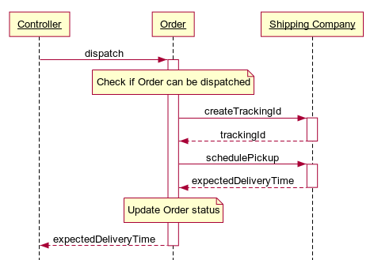

class: center, middle, main-title # Software Engineering UML sequence and activity diagrams --- ## Goals for today - Can read and create UML sequence and activity diagrams --- ## Recap: UML class diagram Describes: - static structure (classes in an OO system) - (optionally) their attributes and methods - connections between classes Does not describe: - **details of how the classes interact with each other** - how methods are implemented (algorithmic details) ??? - Example: https://www.uml-diagrams.org/examples/online-shopping-domain-uml-diagram-example.html?context=cls-examples --- ## UML sequence diagram It is: - An "interaction diagram" - The 2<sup>nd</sup> most used UML diagram ??? Interaction diagrams are a subset of behavior diagrams. Emphasize the flow of control. Usually - how something should be implemented. -- <span>Describes:</span> - A single scenario executing within a system - Who is involved - What messages are sent - In what sequence --- ## Example  ??? Key terms: - Lifeline (represents individual participant in an interaction, actor or object) - Messages - Execution (activation) Once again agnostic to programming language used. Diagram source: participant Controller participant Order participant Shipping Company Controller -> +Order: dispatch note over Order: Check if Order can be dispatched Order -> +Shipping Company: createTrackingId Shipping Company --> -Order: trackingId Order -> +Shipping Company: schedulePickup Shipping Company --> -Order: expectedDeliveryTime note over Order: Update Order status Order --> -Controller: expectedDeliveryTime --- ## More examples - [uml-diagrams.org](https://www.uml-diagrams.org/sequence-diagrams.html) ??? - Lifelines (named instance vs any instance) - Fluency in UML is same as fluency in language - you don't use most words everyday, but they help sometimes. Usually people have only basic UML knowledge. - Reading top to bottom - Message types (sync - filled arrow, async - white arrow, return - dashed line) - Repetition - loop - https://www.uml-diagrams.org/online-shopping-uml-sequence-diagram-example.html?context=seq-examples - If/Else - Alt - https://www.uml-diagrams.org/facebook-authentication-uml-sequence-diagram-example.html - If - Opt - https://www.uml-diagrams.org/examples/spring-hibernate-transaction-sequence-diagram-example.html?context=seq-examples - Interaction Use (sequence diagram composition for large sequences) -- - [Reading sequence diagrams](https://sourcemaking.com/uml/modeling-business-systems/external-view/sequence-diagrams) --- ## Text-based tools - Example: - https://www.websequencediagrams.com/ ``` participant Controller participant Order participant Shipping Company Controller -> +Order: dispatch note over Order: Check if Order can be dispatched Order -> +Shipping Company: createTrackingId Shipping Company --> -Order: trackingId Order -> +Shipping Company: schedulePickup Shipping Company --> -Order: expectedDeliveryTime note over Order: Update Order status Order --> -Controller: expectedDeliveryTime ``` ??? Benefits: version control, interoperability --- ## UML activity diagram It is: - Also a "behavior diagram" - Modeling processes (step-by-step activities) ??? Basically a UML-flavored flowchart. Models contorl flow from one *activity* to another (not object). -- <span>Describes:</span> - The overall process - Activities (actions) that take place - Decisions that are made ??? Can include both computational and organizational process --- ## Example - [Fixing software issue](https://www.uml-diagrams.org/software-resolve-issue-uml-activity-diagram-example.html) ??? The most important shape types: - a black circle represents the start (initial node) of the workflow; - an encircled black circle represents the end (final node); - ellipses represent actions; - diamonds represent decisions; --- ## More examples - [Process Shopping Order](https://www.uml-diagrams.org/shopping-process-order-uml-activity-diagram-example.html?context=activity-examples) - [uml-diagrams.com](https://www.uml-diagrams.org/activity-diagrams.html) ??? - bars represent the start (split) or end (join) of concurrent activities; - Partitions (Swimlanes): https://www.uml-diagrams.org/document-management-uml-activity-diagram-example.html --- ## Summmary - Both UML sequence and activity diagrams model dynamic (behavioral) aspects of a system -- - Activity diagrams focus on actions - I.e. control flow from one activity to another ??? Especially with potential conditional logic, branching, concurrency, etc. -- - Sequence diagrams focus on interactions - I.e. message flow from one object to another, mostly on a single timeline ??? In other words, interactions between objects --- class: middle, center # Questions?